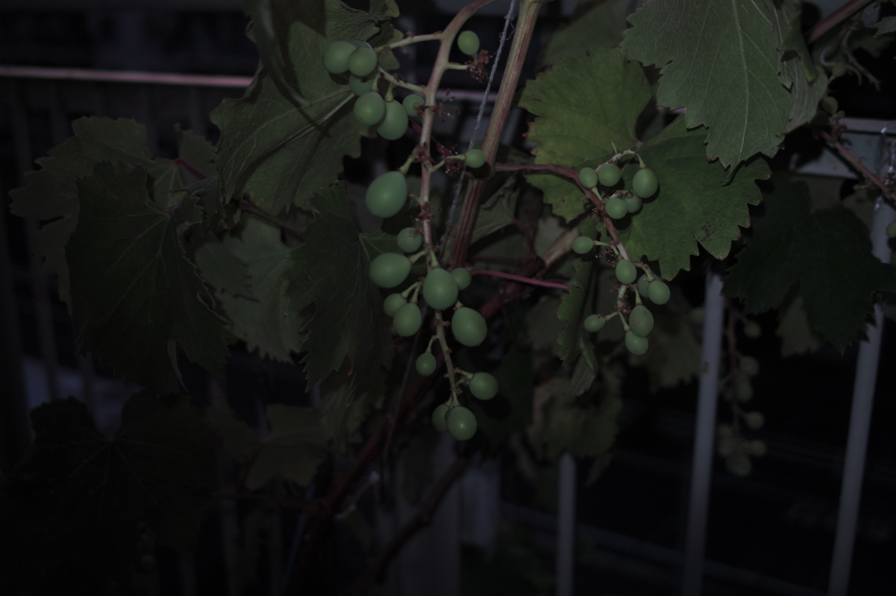

今週の月曜日はおやすみだった。久しぶりに大学時代の友達に会いに北九大へ行く途中、旦過市場のゼミ生のいるところに立ち寄った。
梅ジュースは炭酸入りで美味しかった。店長と話していると、年配の人が入ってきた。師匠と呼ばれているニホンミツバチに詳しい人であることが話しているとわかってきた。
「植木鉢じゃわからん。路地に植えんと。いろいろな種類を植えたらいい。最近のもんは理論ばっかり言ってくるけど、やってみたら、こんな面倒くさいし、本のとおりにいかんし、って言ってやめてしまう。とにかくやってみることだ。」
ということでいつの間にか僕が葡萄に興味を持つ者と認識させてしまったが、僕はこの人のニホンミツバチのように葡萄にハマり込むように思えないのだ。
世界最古の酒は、ミツバチの蜂蜜酒だと言っていた。葡萄酒が結構古いものだと思っていたが、そうではないようだ。
さて、巨峰の実がなりだした。まだ黄緑色だし、実が少ない。でも見るだけで育てたかいがあったように思う。
いつかこの葡萄を露地植えすることは間違いないけれど、いったい何年後なのか？
「ミツバチを飼うのは毎日大変だけれど、植物より簡単よ。植物は病気になったらすぐに全滅してしまったりするけれど、ミツバチは残っていたらまた増えてくる。でもこの前の北九州のスズメバチの外来種の駆除で、だいぶやられたらしい」
とかなんとか聞きながら、病気になって死んでしまわないように願うのみだ。幸い、殺虫剤で死ぬようなことは葡萄はなさそうだ。
